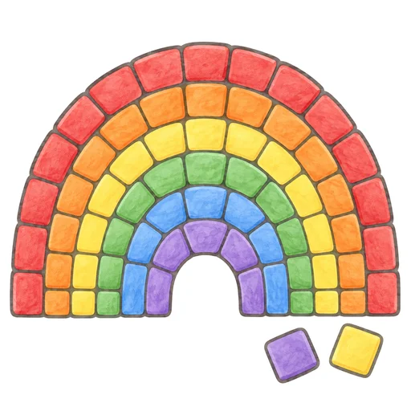
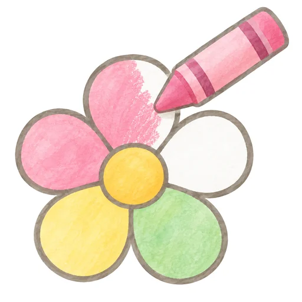
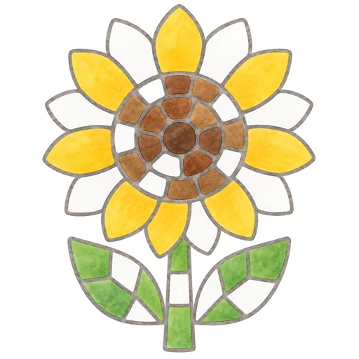
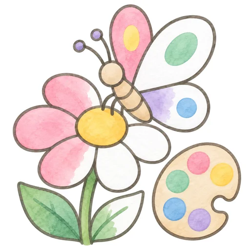
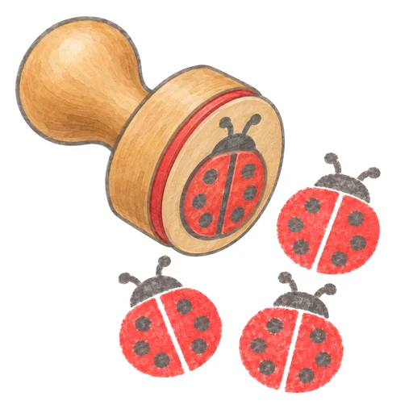

What will you make?

Pixel
Copy pictures with little tiles

Coloring
Colour a picture, or draw your own

Mosaic
Tap the shapes to fill them with color

Color by Number
Match numbers and colors

Stamping
Make a picture with stamps
Brush
Fill
Gradient
Stamp
Undo
Tap a space to fill it.
From
To
★
♥
✿
Size
Turn
Brush
Fill
Shapes
Stickers
Magic
Eraser
●
★
♥
■
▲
Color by Number
Color by Number
Stamping
Stamping
Small
Medium
Large